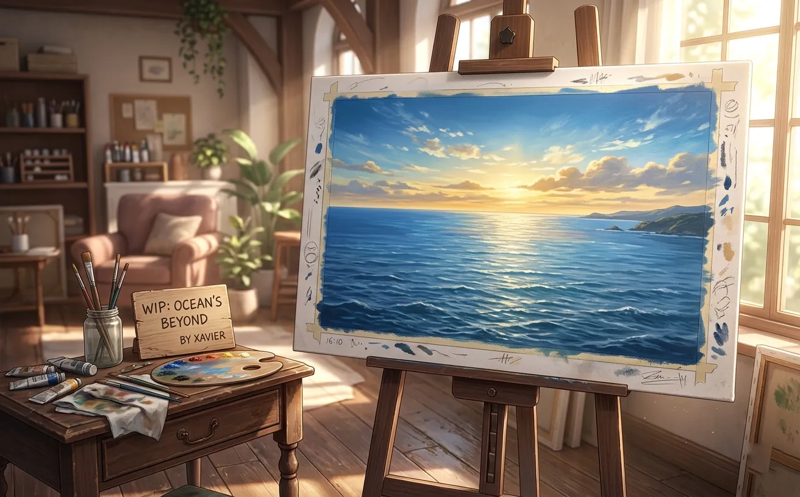
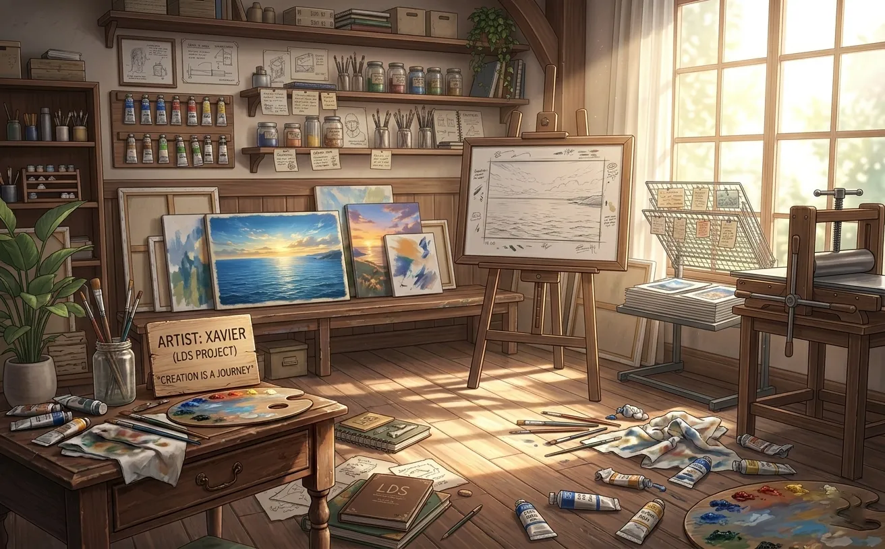
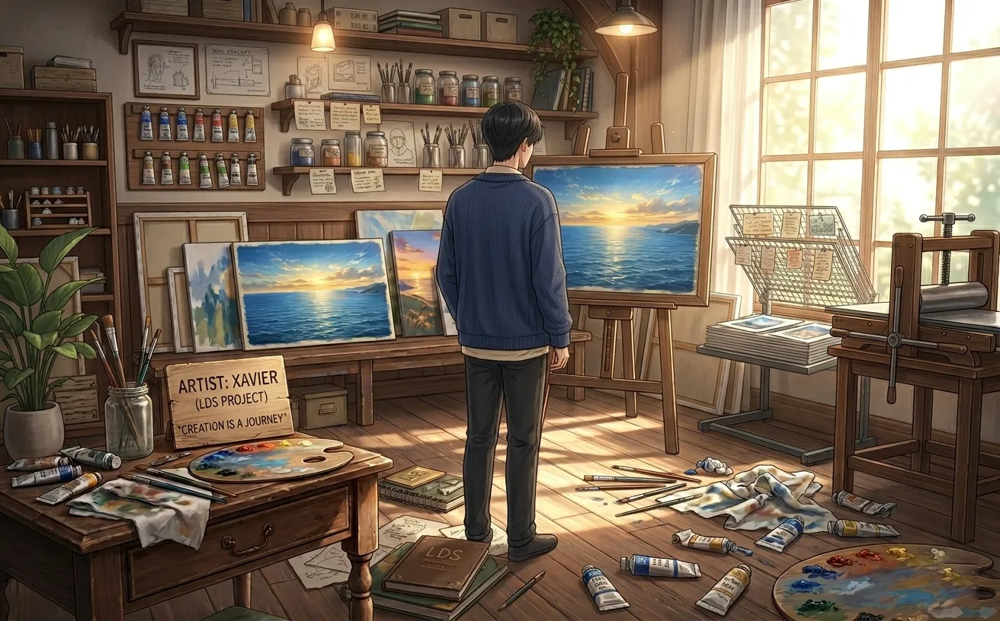
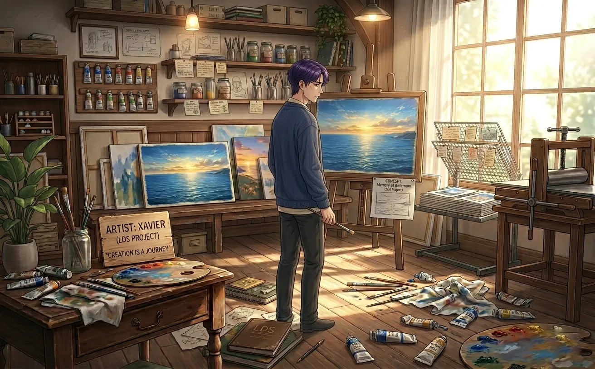
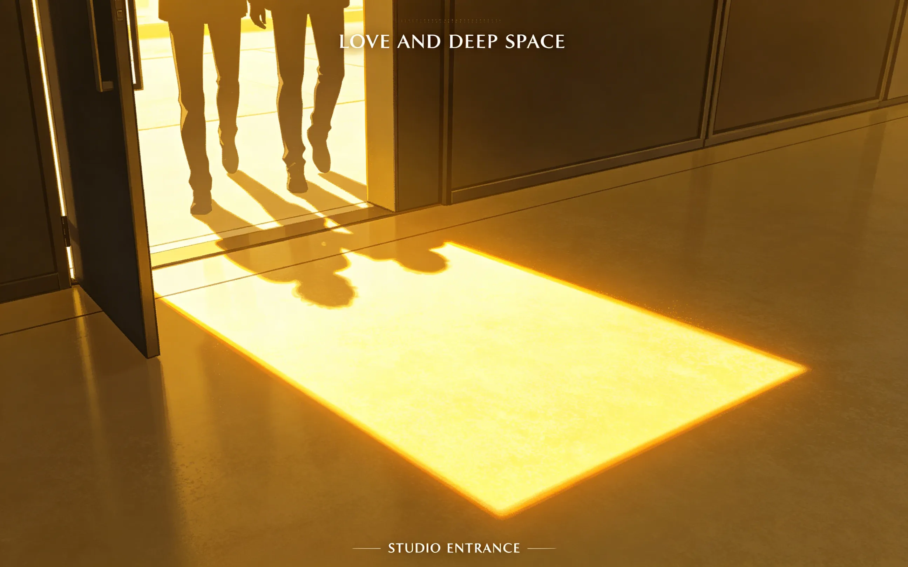
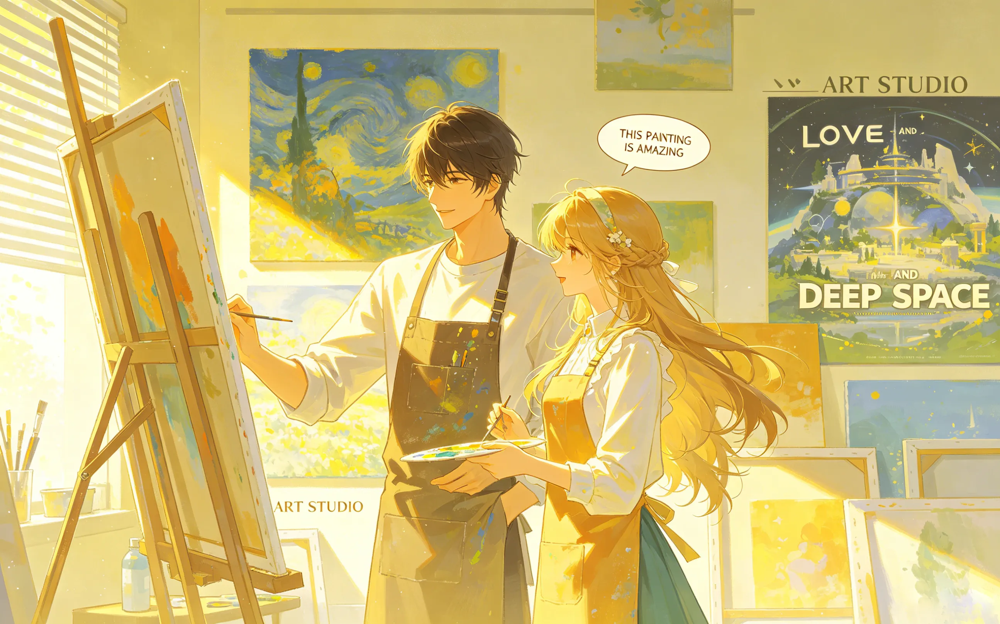
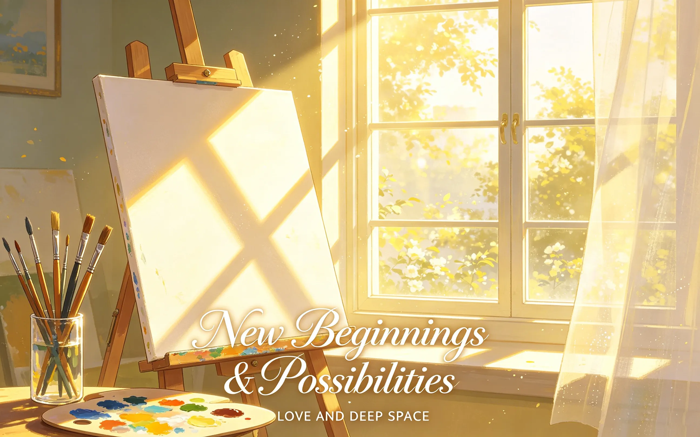
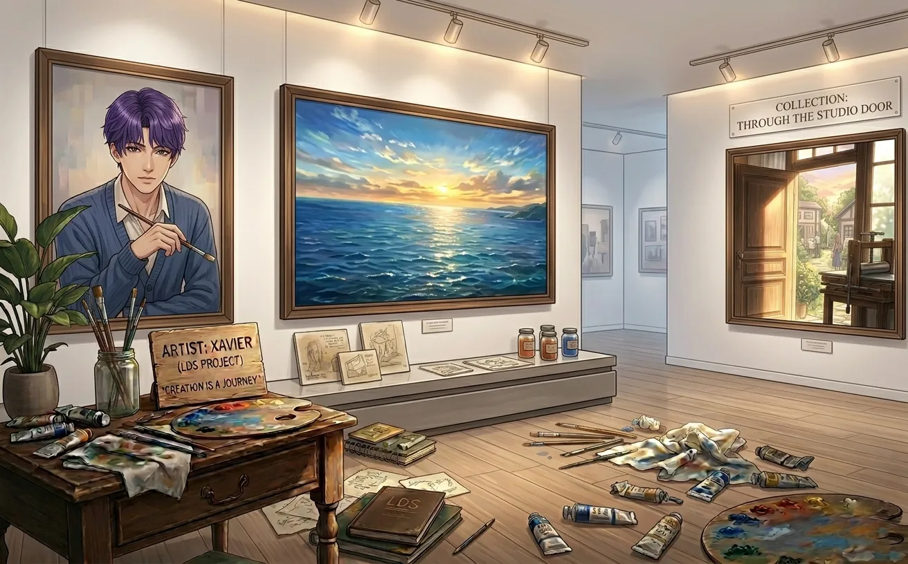
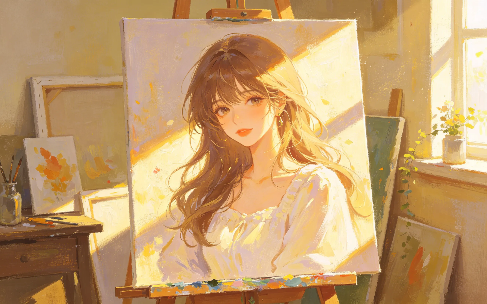

no one understood his paintings. they asked "what is it." he stopped explaining. then she came. she didn't ask. she just looked. and she saw everything.
no one understood his paintings.
not the gallery owners. not the critics. not the collectors who came with money and left with confusion.
they asked the same question every time: "what is it?"
he stopped answering.

the painting was called "the edge of the sea."
it was his best work. he knew it the moment he finished it. the colors were right. the light was right. something in it was true.
the gallery hung it in the front window. for three months, people walked past. some stopped. looked. frowned. walked away.
"it's beautiful," they said. "but what is it?"
he didn't explain. he never explained.
"it's whatever you see," rafayel said.
the collector didn't buy it. no one did. after three months, the gallery took it down. put it in storage. rafayel took it back to his studio. leaned it against the wall. facing out. so he could look at it.
he looked at it every day. trying to understand why no one else could see what he saw.

she came to his studio on a tuesday.
not for him. for the light. the afternoon sun came through his window at a certain angle, and she had noticed it from the street.
"the light is beautiful," she said from the doorway.
he was mixing paint. didn't look up. "it is."
"does it always come in like that?"
"only in the afternoon."
she stepped inside. walked to the window. looked out. then turned. saw the painting leaning against the wall.
she stood in front of it. didn't say anything. just looked.
he waited for the question. "what is it?" it always came. always.
it didn't come.

she stood there for a long time.
not the polite glance of someone humoring an artist. not the confused stare of someone trying to figure out what they were supposed to see.
she was really looking. at the colors. at the light. at something he couldn't name.
he watched her. forgot to mix paint. forgot to breathe.
finally, she spoke.
"but you're not just painting the sea."
he didn't say anything. he couldn't.
"you're painting... waiting."
his heart stopped.
she turned to look at him. "you're waiting for something. or someone. it's at the edge of the painting. just out of frame."
he didn't know what to say. so he said nothing.
but she had seen it. no one had ever seen it before.

no one knew about the waiting.
not the gallery owners who thought he was difficult. not the collectors who found him charming but incomprehensible. not even the critics who wrote long essays about his work, all of them wrong.
he had been waiting for a thousand years. for someone he couldn't name. for a face he only saw in dreams.
he painted the waiting. over and over. the sea. the shore. the horizon. the space just before something arrives.
"a long time," he said.
she nodded. like she understood. like she had been waiting too.
he wanted to ask what she was waiting for. he didn't. it felt too personal. too soon. too much.
but he wanted to.

she came back the next day.
and the day after that. and the one after that.
she didn't always look at the painting. sometimes she sat on his floor. sometimes she watched him work. sometimes she brought food.
she didn't ask about the waiting again. not directly. but she looked at him differently now. like she was trying to see the same thing she saw in the painting.
"have you found her?"
he looked at her. at her face. at the way she tilted her head when she was curious.
"maybe," he said. "i'm not sure yet."
she smiled. "you'll know when you do."
he hoped she was right.

she figured it out on a thursday.
she was looking at the small portraits on his wall. the ones he never showed anyone. the ones he painted late at night when he couldn't sleep.
"the face in your paintings," she said. "it's the same face."
"i know."
"it's familiar."
he didn't say anything. he knew what was coming.
"yes."
she didn't run. didn't laugh. didn't call him crazy.
she just looked at him. and then at the paintings. and then back at him.
"how long have you been painting me?"
"a long time."
"before you met me?"
"yes."
she was quiet for a long time. then: "that's not creepy. it's... i don't know what it is."
"neither do i."
she smiled. small. unsure. "maybe we'll figure it out together."
he nodded. "maybe."

he started a new painting.
not of the sea. not of the waiting. of her. but not the version he had been painting for years — the one in his dreams, the one he had been searching for.
the real her. the one who sat on his floor and brought him food and noticed the light in his windows.
he couldn't finish it.
"when will it be ready?"
"i don't know."
he didn't know how to paint someone he was still learning to see. every time he looked at her, he noticed something new. the way her hair fell. the way she laughed. the way she said his name.
the painting would never be finished. because she would never stop changing. because he would never stop noticing.
he didn't tell her that. but he thought she knew.

he had an exhibition. his first in years.
the gallery asked for the painting — "the edge of the sea." the one no one had bought. the one she had seen.
he agreed. but he added something. in the corner of the gallery, on a small wall by itself, he hung the unfinished painting. the one of her.
she came to the opening. stood in front of it. didn't say anything for a long time.
"it's not finished."
"i know."
"why did you hang it?"
he thought about it. "because you're the reason i started painting again. not the waiting. you."
she looked at him. then at the painting. then back at him.
"i don't know what to say."
"you don't have to say anything."
she didn't. but she stayed. until the gallery closed. until the lights went out. until he walked her home.

the painting is still on his easel.
not finished. probably never will be.
she asked him once if he'd ever finish it.
"maybe," he said. "maybe not."
"why not?"
"because you're still changing. because i'm still learning to see you."
she smiled. "that's the nicest thing anyone's ever said to me."
he didn't think it was that nice. but he was glad she thought so.
"what's it about now?"
"having found something."
she didn't ask what. she already knew.